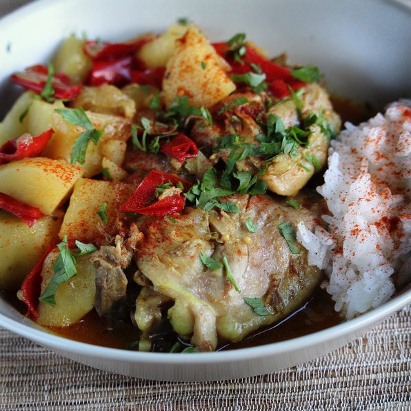

Skinless chicken thighs can be substituted for chicken thighs with skin.
I learned this recipe when visiting my Colombian family members in Houston, Texas. The sauce that the chicken cooks in is chock full of flavor.
Cumin, curry, black pepper, turmeric, pimenton (paprika), and seasoning salt make the chicken's sauce tasty enough to lick your plate! Serve with rice.
Ingredients
- 1 ½ teaspoons olive oil
- 1 large onion, sliced
- 6 cloves garlic, chopped
- 1 red bell pepper, sliced
- 1 green bell pepper, sliced
- 11 fluid ounces beef broth
- 1 ½ tablespoons ground cumin
- 1 tablespoon curry powder
- 1 tablespoon seasoning salt
- 1 ½ teaspoons garlic powder
- 1 ½ teaspoons ground turmeric
- 1 ½ teaspoons pimenton (paprika)
- 1 ½ teaspoons dried oregano
- 1 ½ teaspoons ground black pepper
- 6 chicken thighs
- 4 potatoes, peeled and quartered
Directions
- Heat olive oil in a deep skillet over high heat. Add onions and garlic; cook and stir until onions are softened, about 5 minutes. Stir in red and green bell peppers; cook and stir until peppers are firm but tender, 5 to 7 minutes. Mix in beef broth, cumin, curry powder, seasoning salt, garlic powder, turmeric, pimenton, oregano, and pepper
- Submerge chicken thighs, skin side down, half way into broth mixture; stir to coat chicken. Bring to a boil; cover and reduce heat to low. Simmer until chicken is no longer pink, about 40 minutes.
- Stir potatoes into the chicken mixture until mostly submerged; check that chicken thighs are still skin side down. Bring to a boil; cover. Reduce heat; simmer until potatoes are soft and chicken is cooked through, about 1 hour.
Return to top
Return to main page